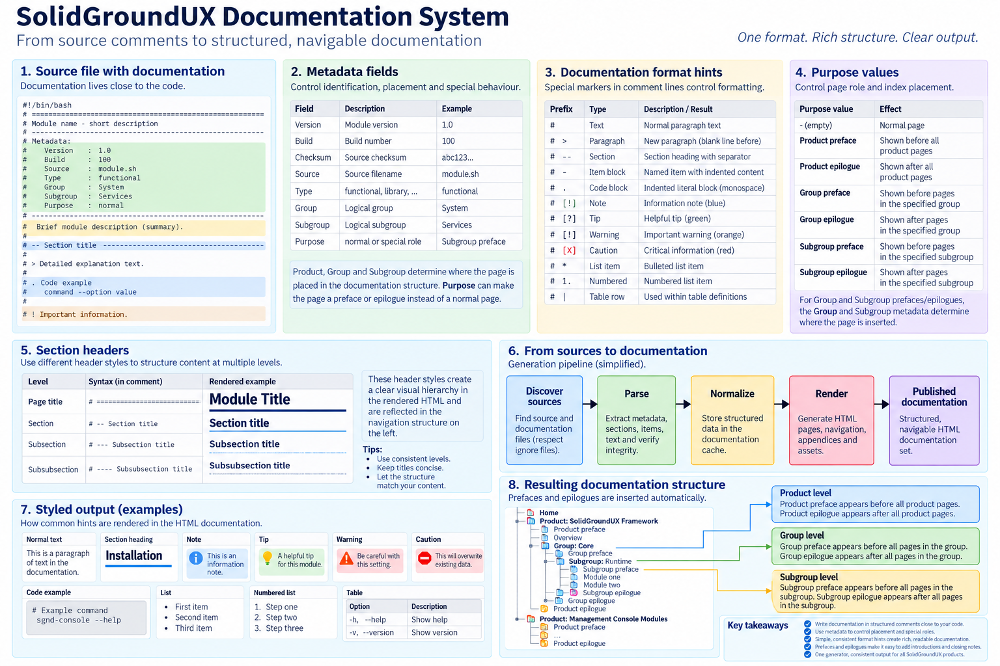

Documentation-only sources can provide introductory or closing content for a product, group, or subgroup. The renderer recognizes these sources as prefaces or epilogues and places them in the generated index around the normal content at the corresponding hierarchy level.
The role is primarily selected by the Metadata Purpose value:
Group and Subgroup metadata determine where group- and subgroup-level sources are placed. Product-level sources belong directly to their product. A preface is emitted before the normal modules at that level; an epilogue is emitted after them. These files therefore affect both page order and the generated navigation index.
Filename recognition is also supported as a compatibility fallback. The renderer recognizes conventional names based on the product, group, or subgroup name followed by a preface or epilogue suffix. Names are normalized for matching, so hyphens, spaces, and underscores in the logical name do not define the hierarchy themselves.
New documentation sources should make the role explicit through Purpose rather than relying on filename inference. This keeps placement independent of the physical doc-sources filename and leaves Group and Subgroup metadata as the authoritative description of where the content belongs.
Example group preface metadata:
Example subgroup epilogue metadata:
